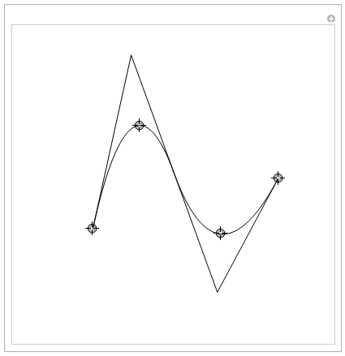

Implementation of κ-Curves in Wolfram Mathematica
Wolfram Mathematica is a symbolic computing system.
This is a easy reading version of the source code. The code is rendered in a SVG figure. Click the figure to zoom in. You can download the .nb file from here and copy the code from here.
The following code works fine in Mathematica 12.0. If you found unsupported syntax, please try to update your Mathematica to newer versions or modify the code according to your MMA version.

Screen shots
